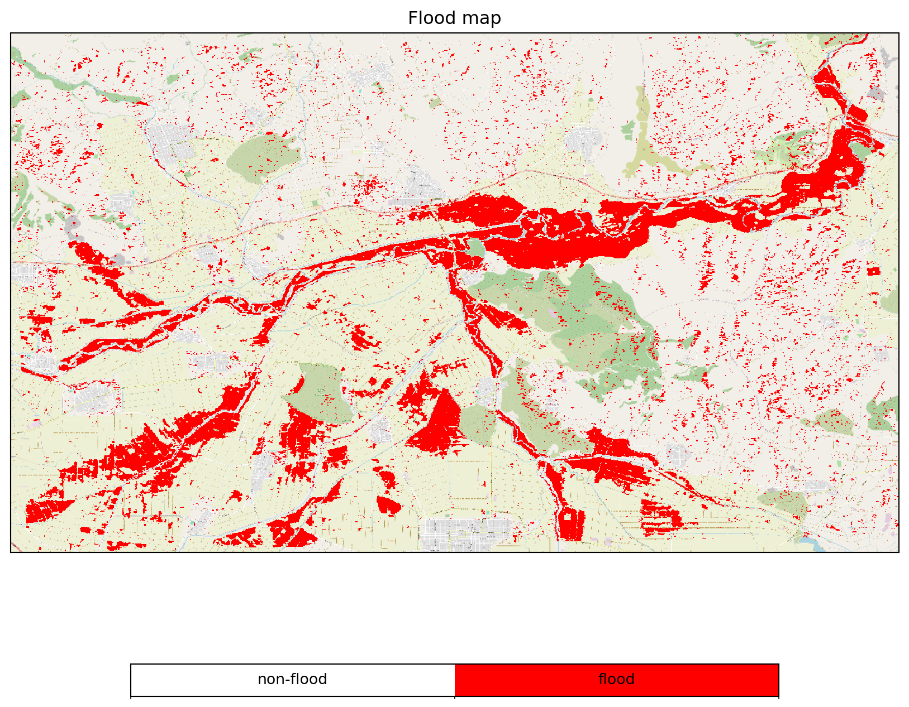
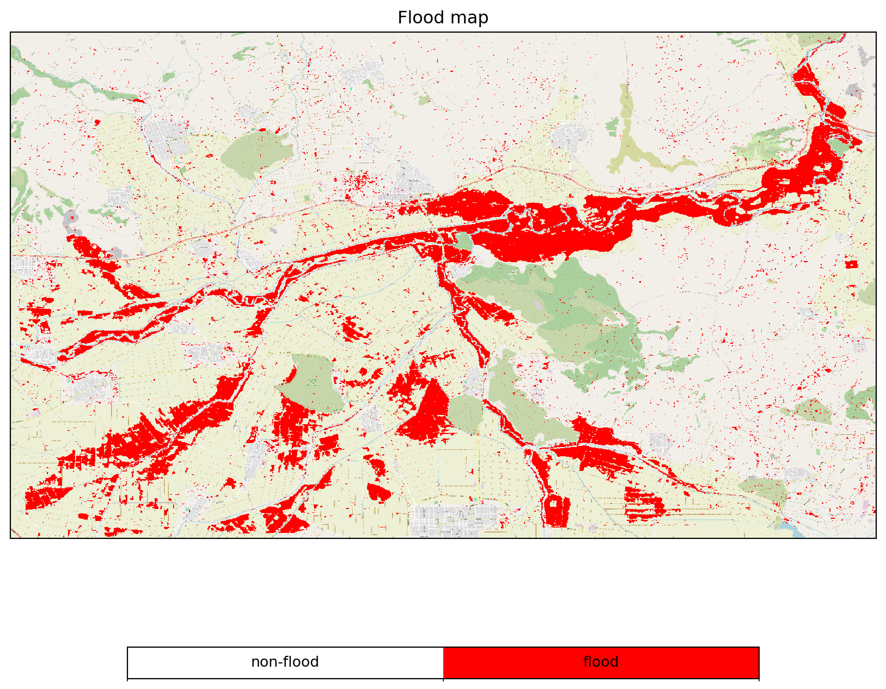

import numpy as np
import xarray as xr
from datetime import datetime
import os
from openeo_flood_mapper_local.view_flood_map import view_flood_map
import openeo
from openeo.processes import ProcessBuilder, array_element, add, multiply, sin, cos, mask, exp, median2 openEO remote processing
In this second exercise we use the EODC openEO service as our data source, and, more importantly, as our processing center.
2.1 Setting-up a Python session
We again begin by loading openEO and some additional packages.
2.2 Connect to the EODC openEO Backend
Establish a connection to the EODC backend with openeo.connect(). This results in a connection object which is a critical aspect of collection discovery on the backend by openEO.
backend = "https://openeo.eodc.eu"
connection = openeo.connect(backend)
connection.authenticate_oidc()Authenticated using refresh token.<Connection to 'https://openeo.eodc.eu/openeo/1.1.0/' with OidcBearerAuth>2.3 Load Collections from the EODC
We can first have a look at the metadata available at the EODC for the required collections (SENTINEL1_SIG0_20M, SENTINEL1_HPAR, and SENTINEL1_MPLIA), like so:
connection.collection_metadata("SENTINEL1_SIG0_20M")We can then load the collections. This is done by using the method load_collection() and by using the collection ids as defined above. During collection loading we also do some initial filtering on the spatial and temporal extent. More importantly, we have to filter SENTINEL1_MPLIA and SENTINEL1_HPAR for the descending orbit “D080” to be able to calculate the correct reference backscatter signatures. So, we use the following criteria for filtering.
spatial_extent = {"west": 21.93, "south": 39.47, "east": 22.23, "north": 39.64}
sensing_date = ["2018-02-28T04:00:00Z", "2018-02-28T05:00:00Z"]
props = {
"sat:orbit_state": lambda x: openeo.processes.eq(x, "descending"),
"sat:relative_orbit": lambda x: openeo.processes.eq(x, 80)
}sig0_dc = connection.load_collection(
"SENTINEL1_SIG0_20M",
spatial_extent = spatial_extent,
temporal_extent = sensing_date,
bands=["VV"]
). \
mean_time()connection.collection_metadata("SENTINEL1_HPAR")hparam_dc = connection.load_collection(
"SENTINEL1_HPAR",
spatial_extent = spatial_extent,
temporal_extent = "2019",
properties=props
). \
mean_time()/home/mschobbe/miniconda3/envs/openeo-flood-mapper-local/lib/python3.10/site-packages/openeo/rest/connection.py:1188: UserWarning: SENTINEL1_HPAR property filtering with properties that are undefined in the collection metadata (summaries): sat:orbit_state, sat:relative_orbit.
return DataCube.load_collection(connection.collection_metadata("SENTINEL1_MPLIA")plia_dc = connection.load_collection(
"SENTINEL1_MPLIA",
spatial_extent = spatial_extent,
temporal_extent = ["2020-01-01", "2020-12-31"],
bands=["MPLIA"],
properties=props
). \
mean_time()/home/mschobbe/miniconda3/envs/openeo-flood-mapper-local/lib/python3.10/site-packages/openeo/rest/connection.py:1188: UserWarning: SENTINEL1_MPLIA property filtering with properties that are undefined in the collection metadata (summaries): sat:orbit_state, sat:relative_orbit.
return DataCube.load_collection(2.4 openEO Analysis at the EODC
The remainder of the worklfow is similar to the local processing with some minor differences associated to naming of the objects.
def water_backscatter(plia_dc):
return (plia_dc.band('MPLIA') * -0.394181 + -4.142015). \
add_dimension('bands', 'wbsc', 'bands')Here we apply again the water_backscatter() function to the incidence angle datacube, as follows:
water_bsc_dc = water_backscatter(plia_dc)
water_bsc_dcTo initiate the processing we create a batch job with the create_job() method. This performs the data processing based on the JSON representation of the processing graph. Only by submitting this job to the EODC backend, we can actually perform the processing, like so:
water_bsc_res = water_bsc_dc.save_result(format = "NetCDF")
water_bsc_job = water_bsc_res.create_job(title = "water_bsc_greece_flood_2018_as_NetCDF_py")
water_bsc_job.start_job()We can then download the results.
water_bsc_job.download_result("data/watter_backscatter/example.nc")And view the retrieved data.
water_bsc_dc = xr.open_dataset("data/watter_backscatter/example.nc")
water_bsc_dcThe following code is a duplicate of the local flood mapping processing pipeline, where we define the harmonic model.
def harmonic_expected_backscatter(data, dtime_str):
w = np.pi * 2 / 365
dt = datetime.strptime(dtime_str, "%Y-%m-%d")
t = dt.timetuple().tm_yday
wt = w * t
M0 = data.band('M0')
S1 = data.band('S1')
S2 = data.band('S2')
S3 = data.band('S3')
C1 = data.band('C1')
C2 = data.band('C2')
C3 = data.band('C3')
hm_c1 = (M0 + S1 * np.sin(wt)) + (C1 * np.cos(wt))
hm_c2 = ((hm_c1 + S2 * np.sin(2 * wt)) + C2 * np.cos(2 * wt))
hm_c3 = ((hm_c2 + S3 * np.sin(3 * wt)) + C3 * np.cos(3 * wt))
return hm_c3.add_dimension('bands', 'hbsc', 'bands')Perform this function on the datacube for the time slice of the flooding event.
land_bsc_dc = harmonic_expected_backscatter(hparam_dc, '2018-02-01')In turn, we define the Bayesian classification model, as follows:
def bayesian_flood_decision(x: ProcessBuilder) -> ProcessBuilder:
nf_std = 2.754041
sig0 = x.array_element(index=0)
std = x.array_element(index=1)
wbsc = x.array_element(index=2)
hbsc = x.array_element(index=3)
f_prob = (1.0 / (std * np.sqrt(2 * np.pi))) * np.exp(-0.5 * \
(((sig0 - wbsc) / nf_std) ** 2))
nf_prob = (1.0 / (nf_std * np.sqrt(2 * np.pi))) * np.exp(-0.5 * \
(((sig0 - hbsc) / nf_std) ** 2))
evidence = (nf_prob * 0.5) + (f_prob * 0.5)
f_post_prob = (f_prob * 0.5) / evidence
nf_post_prob = (nf_prob * 0.5) / evidence
# flood if flood class has higher probability
return f_post_prob.gt(nf_post_prob)And then execute this on a combined data cube, as follows:
std_dc = hparam_dc.band('STD').add_dimension('bands', 'std', 'bands')
sig0_dc = sig0_dc.reduce_bands('mean').add_dimension('bands', 'sig0', 'bands')
decision_in_dc = sig0_dc. \
merge_cubes(std_dc). \
merge_cubes(water_bsc_dc). \
merge_cubes(land_bsc_dc) . \
merge_cubes(plia_dc)
flood_dc = decision_in_dc.reduce_bands(bayesian_flood_decision). \
add_dimension('bands', 'dec', 'bands')
flood_dc = flood_dc.merge_cubes(decision_in_dc)Finally, we can again proceed and send this processing pipeline of to the EODC.
flood_res = flood_dc.save_result(format = "NetCDF")
flood_job = flood_res.create_job(title = "flood_greece_flood_2018_as_NetCDF_py")
flood_job.start_job()And retrieve the data, like so:
flood_job.download_result("data/thessaly_floodmap.nc")Now let’s have a look at the processing job performed at EODC.
view_flood_map(xr.open_dataset("data/thessaly_floodmap.nc").dec)
We can than also again extend this pipeline to include the postprocessing steps.
- Masking of Exceeding Incidence Angles
mask_ia = (flood_dc.band("MPLIA") >= 27) * (flood_dc.band("MPLIA") <= 48)
flood_dc = flood_dc * mask_iaCode
flood_res = flood_dc.save_result(format = "NetCDF")
flood_job = flood_res.create_job(title = "flood_greece_flood_2018_as_NetCDF_py")
flood_job.start_job()Code
flood_job.download_result("data/thessaly_floodmap_plia.nc")- Identification of Conflicting Distributions
water_bsc_threshold = flood_dc.band("wbsc") + 0.5 * 2.754041
mask_conflict = flood_dc.band("hbsc") > water_bsc_threshold
flood_dc = flood_dc * mask_conflictCode
flood_res = flood_dc.save_result(format = "NetCDF")
flood_job = flood_res.create_job(title = "flood_greece_flood_2018_as_NetCDF_py")
flood_job.start_job()Code
flood_job.download_result("data/thessaly_floodmap_plia_distr.nc")- Removal of Measurement Outliers
land_bsc_lower = flood_dc.band("hbsc") - 3 * flood_dc.band("std")
land_bsc_upper = flood_dc.band("hbsc") + 3 * flood_dc.band("std")
water_bsc_upper = flood_dc.band("wbsc") + 3 * 2.754041
mask_land_outliers = (flood_dc.band("sig0") > land_bsc_lower) * (flood_dc.band("sig0") < land_bsc_upper)
mask_water_outliers = flood_dc.band("sig0") < water_bsc_upper
flood_dc = flood_dc * (mask_land_outliers | mask_water_outliers)Code
flood_res = flood_dc.save_result(format = "NetCDF")
flood_job = flood_res.create_job(title = "flood_greece_flood_2018_as_NetCDF_py")
flood_job.start_job()Code
flood_job.download_result("data/thessaly_floodmap_plia_distr_out.nc")
- Denial of High Uncertainty on Decision
mask_uncertainty = flood_dc.band("dec") > 0.8
flood_dc = flood_dc * mask_uncertaintyCode
flood_res = flood_dc.save_result(format = "NetCDF")
flood_job = flood_res.create_job(title = "flood_greece_flood_2018_as_NetCDF_py")
flood_job.start_job()Code
flood_job.download_result("data/thessaly_floodmap_plia_distr_out_den.nc")